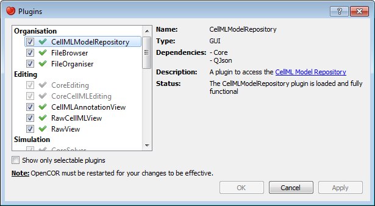

OpenCOR is a plugin-based application. This means that if no plugins are selected, then OpenCOR can do next to nothing.
As can be seen by opening the Plugins dialog box (either by selecting the Tools | Plugins... menu or by clicking here) and by unselecting Show only selectable plugins (if necessary), OpenCOR supports different types of plugins (Organisation, Editing, Simulation, Miscellaneous, API and Third-party; see below):

You can select which plugins you want to use. However, there are plugins which are needed by other plugins (e.g. the Core and QJson plugins are needed by the CellMLModelRepository plugin) and therefore cannot be directly selected. Instead, they will be automatically selected if and only if they are needed by another plugin.
Most of the selectable plugins come with some kind of a graphical user interface (GUI):
Organisation plugins are used to search, open, organise, etc. your (CellML) files:
Editing plugins are used to edit part or all of your (CellML) files using one of several possible views:
There are also some non-selectable Editing plugins:
Simulation plugins are used to simulate CellML files:
There are also some non-selectable Simulation plugins:
Miscellaneous plugins are used for various purposes:
There are also some non-selectable Miscellaneous plugins:
(Non-selectable) API plugins are used to provide access to external APIs:
(Non-selectable) third-party plugins are used to provide access to third-party libraries: